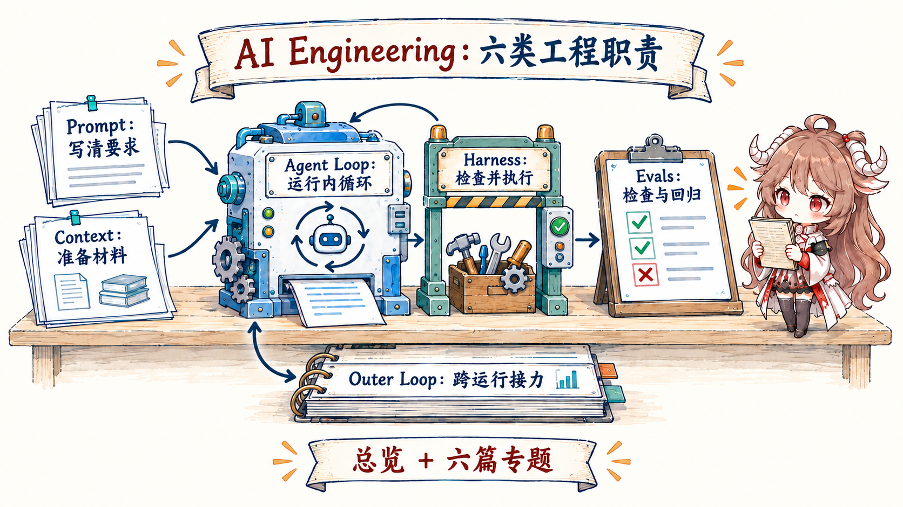

AI Engineering · 七篇路线
从一个任务开始，一步一步认识 Agent。
你不需要先懂这些英文名词。系列会先跟着一个 Agent 完成支付测试修复，再依次回答六个问题：要求怎样说清、材料怎样准备、动作怎样落地、一次运行怎样推进、多次运行怎样接力、最后怎样证明真的完成。

阅读路线
先看完整故事，再逐个理解组成部分
第一篇 · MAP一个 Agent 任务是怎样完成的
先看任务怎样从要求走到工具执行和测试验证，再认识沿途六类工程问题。
开始阅读 → 第二篇 · PROMPTPrompt Engineering：把任务要求说清楚从一句模糊请求开始，逐步补齐目标、背景、限制、完成标准和输出。
开始阅读 → 第三篇 · CONTEXTContext Engineering：把当前需要的材料准备好区分资料库、检索候选和模型此刻真正能看到的材料。
开始阅读 → 第四篇 · HARNESSHarness Engineering：给 Agent 一套安全做事的环境看一句“运行测试”怎样经过工具、权限、隔离和记录，变成真实动作。
开始阅读 → 第五篇 · AGENT LOOPAgent Loop：让 Agent 一步一步把任务做完跟着读取、修改、测试和再判断的多轮过程，理解一次运行怎样前进。
开始阅读 → 第六篇 · OUTER LOOPOuter Loop：让一次次运行接力完成长期工作看任务怎样保存进度、避免并发重复写，并在外部动作超时后安全恢复。
开始阅读 → 第七篇 · EVALSEvals：怎样知道 Agent 真的做好了用可重复任务比较版本、定位失败组件，并决定候选能否进入发布。
开始阅读 →